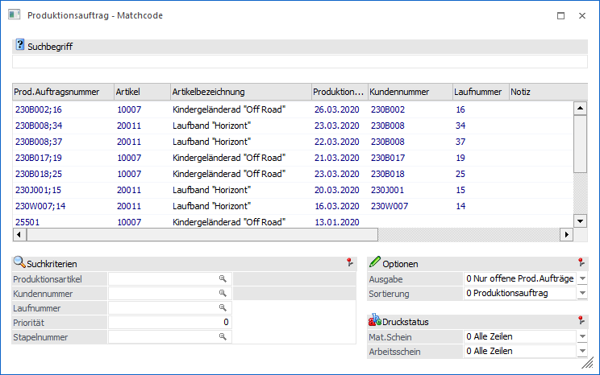
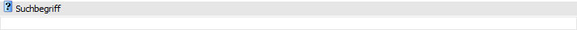
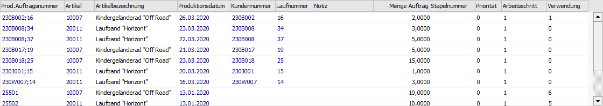
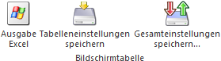
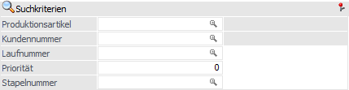
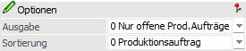
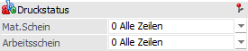

Wenn der Fokus in dem Feld "Produktionsauftrag" liegt und das Lupen-Symbol bzw. die Taste F9 gedrückt wird, dann öffnet sich das Programm "Produktionsauftrag - Matchcode". An dieser Stelle kann gezielt nach Produktionsaufträgen gesucht werden.
Hinweis
Wenn in dem Feld "Produktionsauftrag" ein Teil der gesuchten Nummer oder Bezeichnung eingetragen wurde und die Taste F9 gedrückt wird, dann wird diese Eingabe als Suchbegriff übernommen und die Suche direkt gestartet.

Suchbegriff

Ø Suchbegriff
Die Auswahl kann durch die Eingabe eines Suchbegriffs eingeschränkt werden. Die Suche erfolgt in der Spalte "Prod. Auftragsnummer".
Tabelle "Suchergebnis"

In der Tabelle werden nach Auslösen der Suche (Button "Anzeigen" oder Suchbegriff bestätigen) die gefundenen Produktionsaufträge mit ihren Kopfdaten angezeigt. Per Doppelklick oder Enter-Taste kann der ausgewählte Auftrag anschließend in das Ausgangsfenster übernommen werden.
Tabellenbuttons

Ø Ausgabe Excel
Durch Anwahl des Buttons "Ausgabe Excel" wird der Inhalt der Tabelle an Microsoft Excel übergeben.
Ø Tabelleneinstellungen speichern
Die Spalten einer Tabelle können grundsätzlich an beliebige Positionen verschoben, bzw. in der Breite entsprechend angepasst werden. Durch Anwahl des Buttons "Tabelleneinstellungen speichern" werden die Einstellungen benutzerspezifisch gespeichert und bei dem nächsten Aufruf des Programmpunktes wieder vorgeschlagen.
Ø Gesamteinstellungen speichern…
Im Gegensatz zu "Tabelleneinstellungen speichern" können mit "Gesamteinstellungen speichern" mehrere Tabellenaufbauten gespeichert und nach Wunsch geladen werden. Zusätzlich werden Sonderfunktionen der Tabelle (z.B. "Spalte gruppieren") ebenfalls bei der Speicherung bedacht.
Suchkriterien

Ø Produktionsartikel
An dieser Stelle kann auf einen speziellen Produktionsartikel eingegrenzt werden. Dadurch werden nur noch die Produktionsaufträge angezeigt, bei denen dieser Artikel produziert wird.
Ø Kundennummer
An dieser Stelle kann auf eine spezielle Kundennummer eingegrenzt werden. Dadurch werden nur noch die Produktionsaufträge angezeigt, welche für diesen Kunden angelegt worden sind.
Ø Laufnummer
An dieser Stelle kann auf eine spezielle Laufnummer eingegrenzt werden. Dadurch werden nur noch die Produktionsaufträge angezeigt, bei denen diese Laufnummern hinterlegt ist.
Ø Priorität
An dieser Stelle kann auf eine bestimmte Priorität eingegrenzt werden. Dadurch werden nur noch die Produktionsaufträge angezeigt, bei denen diese Priorität hinterlegt ist.
Ø Stapelnummer
An dieser Stelle kann auf eine bestimmte Stapelnummer eingegrenzt werden. Dadurch werden nur noch die Produktionsaufträge angezeigt, bei denen diese Stapelnummer hinterlegt ist.
Optionen

Ø Ausgabe
An dieser Stelle kann definiert werden, welche Produktionsaufträge angezeigt werden sollen. Hierfür stehen folgende Einstellungen zur Verfügung:
ü 0 - Nur die offene Prod.
Aufträge
Es werden nur offene Produktionsaufträge angezeigt.
ü 1 - inkl. erledigter Prod.
Aufträge
Es werden alle Produktionsaufträge angezeigt.
ü 2 - NUR erledigte Prod.
Aufträge
Es werden nur erledigte (d.h. abgeschlossene) Produktionsaufträge
angezeigt.
ü 3 - Simulationen
Es werden nur
Simulationsaufträge angezeigt.
Hinweis
Produktionsaufträge, welche bereits erledigt wurden, werden andersfarbig dargestellt.
Ø Sortierung
Hier kann entschieden werden, wonach die Suchergebnisse in der Tabelle sortiert werden sollen. Hierfür stehen folgende Varianten zur Verfügung:
ü 0 - Produktionsauftrag
Die
Sortierung erfolgt nach der nach Produktionsauftragsnummer.
ü 1 - Erfassung / Chronologisch
(absteigend)
Die Sortierung erfolgt gemäß der Anlage absteigend.
ü 2 - Prod. Datum
(absteigend)
Die Sortierung erfolgt nach dem Produktionsdatum absteigend.
3 - Letzte
Verwendung
Mit dieser Option werden die Suchergebnisse absteigend, nach den
zuletzt verwendeten Produktionsaufträgen, sortiert.
Druckstatus

Ø Mat. Schein
Mit den folgenden Optionen können Aufträge nach dem Druckstatus des Materialentnahmescheines selektiert werden:
ü 0 - Alle Zeilen
Die
Produktionsaufträge werden unabhängig vom Druckstatus des
Materialentnahmescheins selektiert.
ü 1 - muss gedruckt sein
Nur jene
Produktionsaufträge werden im Suchergebnis angezeigt, für welche ein
Materialentnahmeschein gedruckt wurde.
ü 2 - darf nicht gedruckt
sein
Nur jene Produktionsaufträge werden ausgegeben, für welche noch kein
Materialentnahmeschein gedruckt wurde.
Hinweis
Wenn innerhalb eines Auftrags nur für bestimmte Arbeitsschritte ein Materialentnahmeschein erstellt wurde, dann werden auch nur diese Arbeitsschritte ausgewiesen.
Ø Arbeitsschein
Mit den folgenden Optionen können Aufträge nach dem Druckstatus des Arbeitsscheines selektiert werden:
ü 0 - Alle Zeilen
Die
Produktionsaufträge werden unabhängig vom Druckstatus des Arbeitsscheins
selektiert.
ü 1 - muss gedruckt sein
Nur jene
Produktionsaufträge werden im Suchergebnis angezeigt, für welche ein
Arbeitsschein gedruckt wurde.
ü 2 - darf nicht gedruckt
sein
Nur jene Produktionsaufträge werden ausgegeben, für welche noch kein
Arbeitsschein gedruckt wurde.
Hinweis
Wenn innerhalb eines Auftrags nur für bestimmte Arbeitsschritte ein Arbeitsschein erstellt wurde, dann werden auch nur diese Arbeitsschritte ausgewiesen.
Buttons
Ø Anzeigen
Durch Anwahl des Buttons "Anzeigen" bzw. der Taste F5 wird die Suche gestartet.
Hinweis
Durch Bestätigung der Eingabe im Feld "Suchbegriff" wird die Suche ebenfalls gestartet.
Ø Ende
Durch Anwahl des Buttons "Ende" bzw. der Taste ESC wird das Fenster geschlossen.